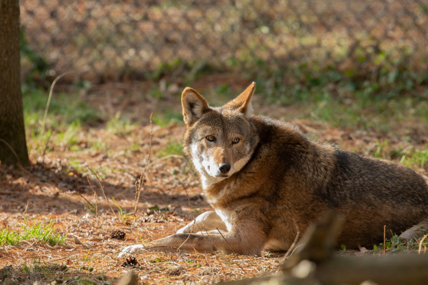
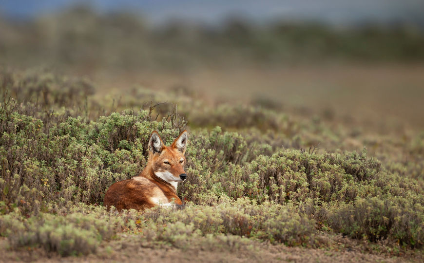
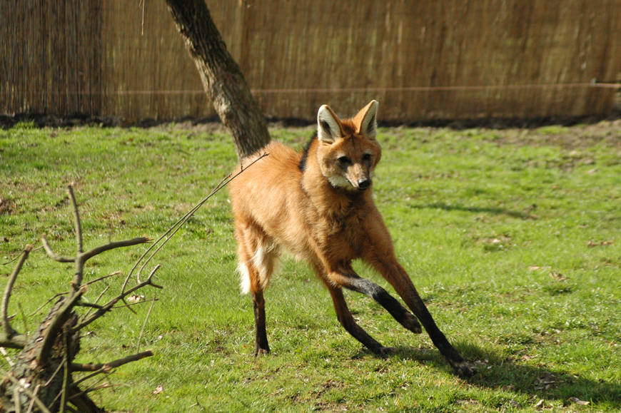

WOLVES
O lobo (Canis lupus) é um animal mamífero, pertencente ao filo Chordata, ordem Carnivora e família Canidae, a mesma família do cachorro. O termo lobo é geralmente utilizado para designar a espécie Canis lupus, um lobo que habita o Hemisfério Norte, também conhecido como lobo cinzento.
Características gerais do lobo
O lobo, nome utilizado para designar a espécie Canis lupus, é um animal que vive em algumas regiões do Hemisfério Norte, sendo encontrado nos Estados Unidos, Europa, Ásia e Canadá. A sua distribuição já foi muito maior do que a atual. Com o declínio de suas populações, esses animais são encontrados em áreas mais restritas e selvagens, onde praticamente não há ação antrópica. Dentre suas principais características, podemos destacar:
A presença de longos pelos, que variam entre a cor cinza até completamente pretos – em algumas regiões, podem apresentar um tom avermelhado. A parte inferior do focinho e pescoço pode apresentar coloração mais clara. O lobo pode apresentar também listras escuras nas patas.
Alimentação do lobo
O lobo é um animal carnívoro e apresenta uma alimentação bastante variada, sendo comum se alimentarem de presas grandes, como veados, alces e javalis. No entanto, a sua alimentação também pode ser constituída por presas pequenas, como roedores, e animais domésticos, como ovelhas e gado, além de animais mortos e sobras de alimentos encontrados nos lixos.
Os lobos normalmente se concentram onde há uma maior presença de alimentos disponíveis. Em algumas regiões, é comum o ataque de lobos aos rebanhos, o que fez com que o lobo acabasse tornando-se vítima de caçadores.
Reprodução do lobo
O lobo é um animal que vive em grupos, as alcateias. Em ambiente natural, as alcateias são grupos familiares onde ocorre a divisão de tarefas, que são lideradas pelos progenitores. Geralmente, o macho reprodutor é responsável pela busca por alimento, e a fêmea, pelo cuidado com as crias.
A alcateia é constituída pelo casal reprodutor e as crias daquele ano, podendo também ter algumas crias do ano anterior. Em alguns casos, pode ser observada a integração ao grupo de outros membros, como algum familiar do casal progenitor. O tamanho das alcateias depende de alguns fatores, como a disponibilidade de alimento.
Ameaças ao lobo
O lobo já habitou as mais diversas áreas do Hemisfério Norte, no entanto, ainda na Idade Média, foi vítima de intensa caça, o que levou à sua extinção no Japão e em diversas regiões da Europa, Estados Unidos, Índia e México. Devido ao grande declínio das populações da espécie, políticas de proteção foram elaboradas, o que acabou por cessar esse declínio.
Outro fator que contribuiu para a proteção da espécie foi a saída da população do campo para os grandes centros urbanos, o que acabou gerando uma mudança no ambiente e, com isso, os lobos voltaram a ocupar diversas áreas onde eles já não mais existiam.
Atualmente, o lobo está classificado, segundo a Lista Vermelha de Espécies Ameaçadas da União Internacional para a Conservação da Natureza e dos Recursos Naturais (IUCN), como pouco preocupante.
Leia mais: Animais ameaçados de extinção: as categorias e alguns animais em extinção
Outras espécies de lobos
Embora o termo lobo seja utilizado para designar a espécie Canis lupus, algumas outras espécies assemelham-se a ele, fazendo com que muitas pessoas os chamem também de lobos. A seguir descreveremos algumas dessas espécies:
O lobo-vermelho apresenta coloração marrom ou amarela, com preto nas costas, podendo apresentar tom avermelhado no focinho, atrás das orelhas e das patas. Eles medem cerca de 1,5 metro e pesam entre 20 e 36 kg. É uma espécie que vive nos Estados Unidos. Desde a colonização desse país, o lobo-vermelho foi vítima da caça, por isso sua população foi extremamente reduzida na natureza.

-
Lobo-vermelho (Canis rufus)
Com o objetivo de tentar salvar a espécie da extinção, pesquisadores retiraram os últimos indivíduos da natureza e levaram para cativeiro. Assim, em 1980, essa espécie foi considerada em extinção na natureza. Em cativeiro, os pesquisadores buscavam preservar a espécie, evitar a hibridação, aumentando a quantidade de lobos vermelhos de forma a restabelecer, futuramente, a espécie na natureza.
Atualmente, são encontrados apenas em regiões da Carolina do Norte, onde foram reintroduzidos. Atualmente, o lobo-vermelho está classificado, segundo a Lista Vermelha de Espécies Ameaçadas da União Internacional para a Conservação da Natureza e dos Recursos Naturais (IUCN), como criticamente em perigo.

O lobo-etíope é uma espécie endêmica da Etiópia. Apresenta uma coloração avermelhada, mas abaixo do focinho, no pescoço e ventre, sua pelagem é branca. Mede cerca de 1 metro de comprimento e pesa entre 11 e 20 kg. Geralmente, as fêmeas apresentam cor mais clara e são menores que os machos.
-
Lobo-etíope (Canis simensis)
Algumas ameaças, decorrentes da presença humana, vêm afetando essa espécie, como a destruição de seu habitat, devido à agricultura, e algumas doenças, como a raiva e cinomose caninas. Atualmente, o lobo-etíope está classificado, segundo a Lista Vermelha de Espécies Ameaçadas da União Internacional para a Conservação da Natureza e dos Recursos Naturais (IUCN), como em perigo.
O lobo-guará é uma espécie que pode ser encontrada em países como Argentina, Bolívia, Paraguai, Peru e Uruguai. Entretanto, é importante destacar que, no Brasil, encontram-se cerca de 90% das populações dessa espécie. O lobo-guará apresenta pelos longos e avermelhados, mas parte do pescoço, das orelhas e da cauda é branca.

-
Lobo-guará (Chrysocyon brachyurus)
Além disso, apresenta uma crina dorsal na cor preta (em algumas regiões, ele é conhecido também por lobo-de-crina, devido a essa característica), bem como o focinho, patas dianteiras e parte da pata traseira. Mede entre 95 e 115 cm de comprimento e pesa entre 20 e 30 kg. O lobo-guará alimenta-se de frutos, tendo importante papel na dispersão de sementes na natureza, e pequenos vertebrados.
São animais solitários, podendo ser vistos em casal apenas no período reprodutivo. A ação antrópica, que destrói seu habitat por meio da expansão de áreas para a agricultura e construção de rodovias, por exemplo, tem ameaçado a espécie. Além disso, assim como ocorre com o lobo-etíope, algumas doenças transmitidas pela presença de cães, como a raiva, têm afetado o lobo-guará.
Atualmente, o lobo-guará está classificado, segundo a Lista Vermelha de Espécies Ameaçadas da União Internacional para a Conservação da Natureza e dos Recursos Naturais (IUCN), como quase em perigo.
Curiosidades sobre o lobo
- O lobo pode mover-se a uma velocidade de até 65 km/h;
- O lobo pode viver em ambientes com temperaturas que vão de -56°C a 50°C.